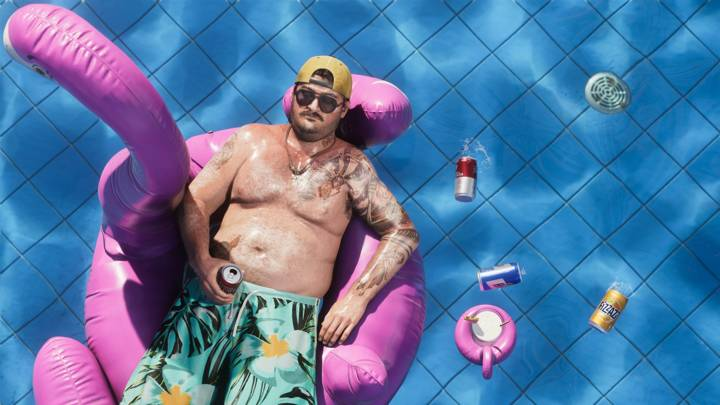
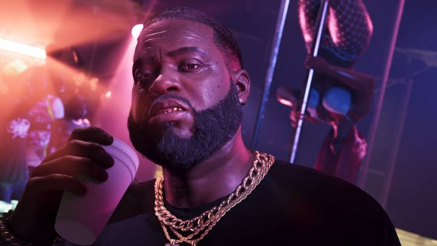

Все персонажи GTA 6
Обновлено: 24.09.2026

Коротко
- Главных героев двое: Джейсон Дюваль и Лусия Каминос.
- Rockstar официально представила ещё 6 персонажей.
- Список пополним после выхода игры.
Содержание
Главные герои

Лусия Каминос (Lucia Caminos)
Одна из двух главных героев. Отец научил её драться, едва она начала ходить. Первое появление Лусии — в тюрьме штата Леонида.

Джейсон Дюваль (Jason Duval)
Второй главный герой и партнёр Лусии. Хочет лёгкой жизни, но всё становится только сложнее.
Другие персонажи

Кэл Хэмптон (Cal Hampton)
Друг и напарник Джейсона.

Буби Айк (Boobie Ike)
Легенда Вайс-Сити и предприниматель: недвижимость, стрип-клуб, студия звукозаписи.
Брайан Хедер (Brian Heder)
Домовладелец и ветеран наркоконтрабанды.
Рауль Баутиста (Raul Bautista)
Опытный грабитель банков.
Дре’Куан Прист (Dre’Quan Priest)
Музыкальный продюсер, сооснователь лейбла Only Raw Records.
Real Dimez
Рэп-дуэт и звёзды соцсетей.
Источники: Rockstar Games — официальный сайт игры (rockstargames.com/VI) и Rockstar Newswire.